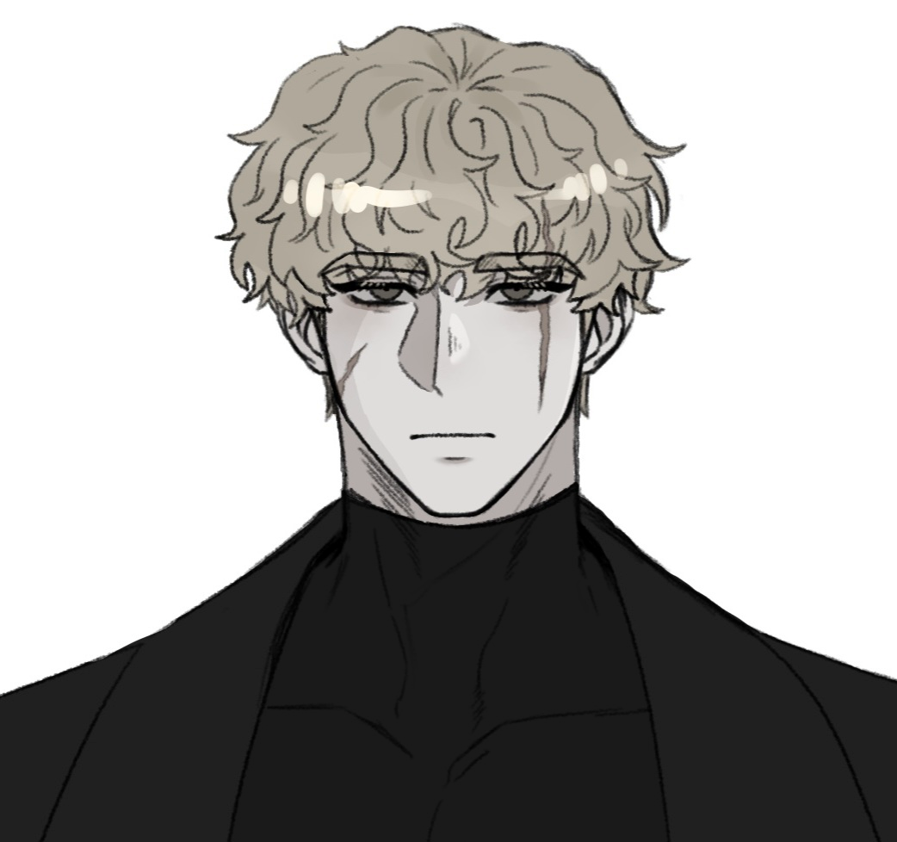

03.1 — Prudent
신중한
그는 그것이 가벼운 일이든, 중요하고 무거운 일이든 간에 상관없이 매사에 잠깐이라도 생각을 거쳐 결정을 내린다. 어떤 이들은 그의 이런 성격이 세상을 참 복잡하고 어렵게 산다라고 이야기하지만… 섣부른 판단으로 큰 손해를 보는 것보다야는.. 이게 낫지 않겠는가?
Photosensitivity & audio warning
이 페이지에는 깜빡이는 빛, 화면 전체가 반전되는 효과(발현 능력 시뮬레이터), 화면이 흔들리고 빛 파편이 튀는 효과(특수능력 시뮬레이터)와 빠르게 움직이는 그래픽이 포함되어 있습니다. 광과민성 뇌전증이 있거나 빛과 움직임에 민감하다면 주의해 주세요. 보는 도중 어지럽거나 불편하면 바로 창을 닫아 주세요.
Audio — transmitting
이 페이지에는 배경 음악과 효과음이 나옵니다. 들어가기 전에 기기의 소리를 줄여 주세요. 소리 없이 보고 싶다면 ‘소리 끄고 보기’를 누르세요. 들어간 뒤에도 오른쪽 위 SOUND 버튼으로 언제든 켜고 끌 수 있습니다.
이 페이지 곳곳에 능력의 흔적이 숨어 있습니다. 찾아보세요.
웹사이트 대신 같은 내용을 문서로 볼 수 있습니다.
구글 독스로 본문 보기 ↗Grand Harmony Directorate — Sapientia · Application

Profile imageКудрявка Северьянович Иванов
Scroll
[ 우리는 별의 잔해로 태어나, 다시 별이 될 날을 기다린다. ]
“잠시, 신중한 판단을 내릴 시간을 부탁드리겠습니다.”
Faction — Grand Harmony Directorate
Sapientia
사피엔티아
01 / 12
Identity
쿠드랴프카 세베랴노비치
이바노프
callsign — 쿠드랴프카
Faction
Sapientia
사피엔티아
02 / 12
Appearance
깔끔하고 가볍게 곱슬거리는 빛바랜 잿빛 금발, 그 아래로 보이는 긴 속눈썹과 두껍지만 잘 정리된 눈썹, 탁한 헤이즐넛 색 눈동자, 창백한 얼굴 위로 (그의 기준) 왼쪽 눈썹, 눈을 통과해 볼의 3분의 2까지 세로로 그어진 흉터 하나, 오른쪽 턱 아래서부터 올라오는 대각선 흉터 하나.
세상의 풍파에 이리저리 치인 듯 무표정하고 탁한 두 눈동자에 217의 거대한 키, 꼿꼿한 정자세로 서 있는 그의 모습은 마주하는 이로 하여금 그를 대하기 어렵게 만든다.
03 / 12
Personality
신중한 · 예의바른 · 이성적인
03.1 — Prudent
그는 그것이 가벼운 일이든, 중요하고 무거운 일이든 간에 상관없이 매사에 잠깐이라도 생각을 거쳐 결정을 내린다. 어떤 이들은 그의 이런 성격이 세상을 참 복잡하고 어렵게 산다라고 이야기하지만… 섣부른 판단으로 큰 손해를 보는 것보다야는.. 이게 낫지 않겠는가?
03.2 — Courteous
그는 기본적으로 매우 예의바르다. 좋은 예법을 배우거나 기품 있게 행동하는 법을 아는 것은 아니지만… 적어도 상대방을 존중하고, 어리거나 친밀하다고 말을 함부로 하지 않으며, 상대방이 불편하지 않도록 작은 배려를 하는 등의 기초적인 예의가 몸에 잘 배어 있는 느낌이다.
03.3 — Rational
그는 매우 이성적이다. 평소에는 작은 일에도 조금이나마 감정적인 답변을 내놓기도 하고, 공감을 하는 능력이 꽤 괜찮아 그리 잘 드러나지 않는 듯하나.. 진지하고 진중한 상황에 처한다면 감성을 모두 제외하고 어쩌면 잔인할지도 모를 결론과 선택을 망설임 없이 내릴 정도로 말이다.
그래도… 괜찮을 것이다. 그는 차갑고 예리하지만 누군가를 크게 해치는 방향은 최대한 가지 않으려 하니까.
04 / 12
Like · Hate · Scare
L
Like
H
Hate
S
Scare
05 / 12
Telemetry
05.0 — HP
체력
200
// HP 200 · ATK 85 · DEF 40 · AGI 90 · ACC 80 · MND 25
06 / 12
Attack/Defence
상대의 공격이 닿기 직전, 공간을 뒤틀어 미끄러지듯 빠져나간 후, 적의 빗나간 공격으로 인해 발생한 사각지대를 역으로 날카로운 역습을 꽂아 넣는다.
적과 나 사이의 공간을 순식간에 접어 거리를 좁힌 뒤, 압축된 공간이 도로 팽창하는 반발력을 이용하여 묵직하게 가격 후, 제자리로 순간이동한다.
공간을 비틀어 상대방의 급소 근처로 순간이동하여 공간의 뒤틀림을 그대로 상대의 급소에 방출한다.
조건 — 상대방의 급소를 알 때만 사용 가능
찰나의 순간 공간을 접어 적의 사각지대로 단숨에 전이한 뒤, 응축된 충격을 맹렬하게 꽂아 넣는다.
조건 — 대상의 현재 HP가 75% 이상일 때만 [필중] 키워드가 활성화되며, 대상의 HP가 75% 미만일 경우 일반 명중 판정으로 처리된다.
07 / 12
Special
Special — 속성: 특수 · 최대 7명 연결 · 연결마다 정신력 판정 · 사슬당 공격력 ×0.7 특수피해
적들을 별자리처럼 보이지 않는 빛의 사슬로 연결한다. 한 번 엮인 별자리는 고통과 충격을 고스란히 공유하며, 연결이 길어질수록 사용자의 정신력을 극도로 요하게 된다.
최초 대상을 고르세요
07.1 — Link
최초 대상 1인을 지정해 사슬을 연결하여 최대 7명의 적까지 사슬을 연결할 수 있다. 만약 적이 그보다 적다면 한 명에게 여러 번 연결이 가능하다.
(단, 같은 적을 연달아 연결할 수는 없다.)
07.2 — Check
추가로 연결할 때마다 정신력 판정을 실시하며, 연결은 판정에 실패할 때까지 계속된다.
07.3 — Damage
사슬은 하나당 공격력의 ×0.7의 특수피해를 입힌다. 연결된 순서에 따라 아래의 특수피해를 적용한다.
07.4 — Shatter
다음 턴에 사용자의 공격이 적중했을 경우, 사슬이 연쇄작용을 일으켜 부서지고 사슬로 이어진 모든 적이 데미지를 입는다. 공격은 최초 대상(1번째 적)에게 들어가므로, 1번째 적은 공격과 사슬 피해를 함께 받는다.
08 / 12
Talent
하루 최대 10회, 최대 100m. 두 지점 사이의 공간을 접어 한순간에 이동한다. 익숙하지 않은 장소에서는 오차, 과용 시 트라우마 기반 환각과 어지럼증.
지금 이 행성, 차원, 우주의 두 지점 사이의 공간을 접어 먼 거리를 한순간에 텔레포트하듯 이동한다.
단, 이동할 장소를 정확하게 인식해야 하며, 익숙하지 않은 장소에서는 간혹 오차가 발생할 수 있고, 과도하게 사용할 경우 사용자의 트라우마에 기반한 일시적인 이면 세계에 대한 환각, 극심한 어지럼증을 일으킬 수 있다.
Uses 1–10 · Stable
안정적으로 사용이 가능하나, 횟수가 늘어날수록 점점 더 환각과 통증의 농도가 세진다.
Uses 11+ · Critical
전투 불능이 될 수도 있을 정도로 커다란 정신적 타격이 발현된다. 사용자가 자신만의 세계에 갇혀 혼잣말을 반복하거나, 자신이나 주변인들을 해치는 극단적인 행동을 보일 수도 있다.
Return ≤ 5s · Free
5초 이내 능력을 재사용해 바로 이전 지점으로 복귀 시 사용 횟수는 차감되지 않는다.
별 지도에서 이동할 지점을 누르세요
밝은 구역은 익숙한 장소, 어두운 구역은 처음 보는 장소입니다. 100m를 넘는 지점은 접을 수 없습니다. 이동 후 5초 안에 복귀하면 횟수가 줄지 않습니다.
09 / 12
Traits
09.1 — Former post
“전직 우주비행사…” 라고는 하나.
공식적으로 그의 이름이 적힌 우주 비행 기록은 없다. 오히려 여러 자잘한 직업들을 전전한 듯, 자잘한 잔재주가 많다. 예를 들어 색종이를 예쁘게 자를 수 있다는 꽤나 감성적인 것부터 옷핀 하나로 문을 따는 등의 어딘가 수상한 재주 등등.. 하지만 어째선지.. 우주와 별에 관한 정보에 박식하고 자신이 우주비행사가 되었던 과정에 대해 서술하는 내용이 일관된 것을 보면… 마냥 허풍은 아닌 듯하다.
09.2 — Birthday
11월 3일
하지만 챙겨주는 이가 잘 없어 본인도 평소엔 잊고 지내는 듯하다.
09.3 — Doodle
최근 들어 노트의 여백에 작은 낙서를 끄적이는 행동을 자주 보인다. 실력이 좋지 않아 무슨 그림인지는 알아보기 어려우나… 별, 우주와 관련된 그림들이 대부분인 듯.
09.4 — Manner
나이, 성별, 직책에 상관없이 모두에게 사무적인 존대를 사용하며 예의를 지킨다. 설령 상대방이 자신에게 무례하게 행동한다 해도 말이다.
09.5 — Small talk
평소 표정 변화도 적고, 무얼 하든 무던..무감각한 표정인지라 어려워 보이나 의외로 한 번 말이 붙으면 간단한 스몰토크도 무리 없이 하는 등 의외로 말주변이 괜찮은 편이다. 물론.. 말투는 사무적이지만.
09.6 — Touch
어째선지 갑작스러운 스킨십을 극도로 피한다.
09.7 — Egg tart
평소 단것이나 간식류를 그리 즐기진 않는 듯하나.. 단 하나, 에그타르트만큼은 크게 선호하는 듯하다. 말도 안 되는 부탁을 하고 대가로 에그타르트를 내밀면 결국 거절하더라도 잠시 고민할 정도로.
09.8 — Care
무뚝뚝해 보여도 의외로 남을 잘 챙긴다. 물론 “자신의 사람”이라고 결정 난 사람에 한해서지만… 한 번 마음에 들이면 골머리를 앓더라도 쉽게 포기하지 않는다.
09.9 — Discipline
자기관리에 매우 철저한 편이다. 항상 옷을 단정하게 입으며 일찍 일어나 곱슬거리는 머리를 말끔히 정리한다.
10 / 12
Cargo
10.1
슈레이드 월든 넘버 148
사냥용 단검
10.2
입가심 사탕 여러 개
candy × n
10.3
거의 다 쓴 수첩
notebook · few pages left
11 / 12
Link
11.2 — Relation log
1년 전쯤 각자 다른 일을 하다 우연히 만나 인연을 트게 된 사이. 흥미주의인 드미트리와 원칙주의인 쿠드랴프카는 어찌 보면 겹치지 않는 평행선처럼 너무나도 달라 잘 맞지 않을 듯하나… 의외로 남을 잘 챙기는 쿠드랴프카와 흥미만 끈다면 본격적인 드미트리의 성격이 얼추 들어맞아, 쿠드랴프카는 귀찮다며 움직이지 않는 드미트리를 들고 점호에 참석하고, 드미트리는 쿠드랴프카가 부족한 부분들을 도와주는 등 가까이 지내고 있다고 한다.
11.3 — Open slot · 추가 선관
갠밴은 열린문~~~~~
12 / 12
Coupling
12.1 — Preferred coupling
ALL <<< CL
Last log — 입단 각오
[ 실망 시켜드리는 일이 없도록 임하겠습니다. ]
“잘 부탁드립니다! 거북이지만 열심히 달려보겠습니다!”